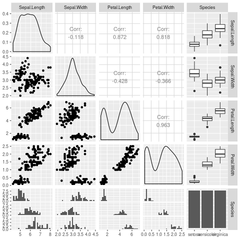

This is an example taken from https://carl.ac/blogging-with-emacs-org-github-pages.
Here is a table:
Here is some latex: \(\omega\) and then some more:
Here is some code I went and ran:
library(GGally) ggpairs(iris)
